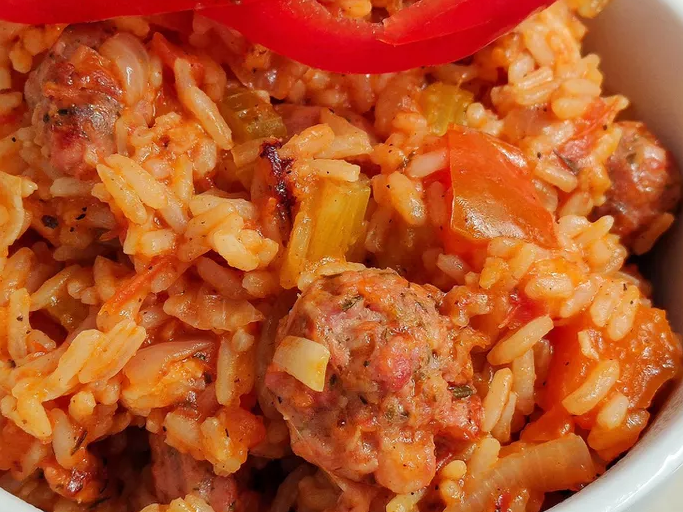

Jambalaya

Description
Jambalaya is a one-pot dish that's made with rice, meat or seafood, and vegetables. With French and Spanish influences, jambalaya is quite similar to paella. The name "jambalaya" likely comes from the Provençal word "jambalaia," which means mishmash.
Like many Cajun and Creole foods, jambalaya starts with the Cajun holy trinity: a flavor base of onion, bell peppers, and celery.
Ingredients
- Oil: Chicken and andouille sausage are sautéed in peanut oil.
- Sausage: Opt for andouille sausage for the most authentic jambalaya.
- Chicken: Cut one pound of boneless, skinless chicken breasts into 1-inch pieces.
- Spices and seasonings: This chicken and sausage jambalaya is flavored with Cajun seasoning, fresh garlic, red pepper flakes, salt, pepper, hot sauce,
- Vegetables: You'll need an onion, green bell peppers, and celery.
- Rice: Opt for plain white rice for this jambalaya recipe.
- Broth: Use store-bought or homemade chicken broth to cook the rice.
Steps
- Cook the meat: Season the sausage and chicken pieces with Cajun seasoning. Sauté the sausage until browned, then remove with a slotted spoon and set aside. Sauté chicken until lightly browned on all sides. Remove with a slotted spoon and set aside.
- Cook the vegetables: In the same pot, sauté the onion, celery, bell pepper, and garlic until tender. Stir in the crushed tomatoes and seasonings. Add the meat and cook for 10 minutes.
- Add the rice: Stir in the rice and chicken broth. Bring to a boil, reduce the heat, and cook until all the liquid is absorbed.